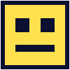
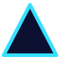

Qu’est-ce que Geometry Dash ?
Geometry Dash est un jeu vidéo créé par un développeur suédois qui se fait appeler RobTop. Il est sorti en 2013.
Le joueur dirige un personnage qui avance automatiquement dans un niveau, au rythme d’une musique.
Il n’a qu’une seule commande : appuyer (touche, clic ou doigt sur l’écran) pour faire sauter ou monter son personnage.
Sur quoi peut-on y jouer ?
Sur téléphone
iPhone et Android : on joue en appuyant sur l’écran. Une version gratuite, appelée Geometry Dash Lite, propose moins de contenu.
Sur ordinateur (PC)
Le jeu est disponible sur Steam depuis 2014. On joue avec le clavier ou la souris.
Comment ça marche ?
- Le niveau démarre et le personnage avance tout seul.
- Le joueur appuie au bon moment pour passer au-dessus des obstacles.
- Si le personnage touche un obstacle, il explose et le niveau recommence au début.
- Si le joueur arrive à la fin, le niveau est réussi et il gagne des étoiles.
Chaque niveau est accompagné d’une musique, et les obstacles sont placés pour suivre le rythme.
C’est pour cela qu’on dit que c’est un jeu de rythme.
Le cube et les piques
Le personnage de base est un cube.
L’obstacle le plus courant est le pique (un triangle) : un seul contact et le niveau est perdu.


Les différents modes de jeu
Pendant un même niveau, le personnage peut changer de forme en passant dans un portail. Chaque forme se contrôle différemment :
Le cube
Le mode de base. Il avance au sol et saute quand on appuie.
Le vaisseau
Il vole. Quand on reste appuyé il monte, quand on relâche il descend.
La boule
Elle roule et change de sens (sol ou plafond) à chaque appui.
L’OVNI
Il fait de petits sauts en l’air, plusieurs fois de suite.
L’ondulation
Elle se déplace en diagonale, vers le haut quand on appuie et vers le bas sinon.
Le robot
Il saute plus haut si on reste appuyé plus longtemps.
L’araignée
Elle se téléporte du sol au plafond à chaque appui.
Les obstacles et les éléments du décor
- Les piques : le danger le plus courant. Un seul contact et le niveau est perdu.
- Les blocs : on peut marcher dessus, mais les toucher de face fait perdre.
- Les scies : des obstacles ronds qui tournent et qui sont mortels.
- Les plateformes de saut : elles propulsent automatiquement le personnage en l’air.
- Les orbes : des cercles que l’on peut utiliser en appuyant au bon moment pour faire un saut supplémentaire.
- Les portails : ils changent le mode de jeu, la vitesse, la taille ou le sens de la gravité.
Les niveaux de difficulté
Chaque niveau a une difficulté, représentée par un visage.
Plus le niveau est difficile, plus il rapporte d’étoiles.
Dans l’ordre, de la plus facile à la plus difficile :
- Auto : le niveau se joue tout seul, c’est le plus simple.
- Facile
- Normal
- Difficile
- Très difficile
- Insane : beaucoup d’obstacles rapprochés, il faut être très précis.
- Demon : la difficulté maximale (voir ci-dessous).
Les niveaux Demon
Les niveaux Demon sont les plus difficiles du jeu.
Ils rapportent 10 étoiles et demandent souvent des centaines ou des milliers de tentatives.
Eux-mêmes sont classés en cinq catégories, de la moins difficile à la plus difficile :
- Easy Demon : le Demon le plus accessible, une bonne première étape pour un joueur qui a déjà beaucoup progressé.
- Medium Demon : plus long ou plus précis, il demande de bien maîtriser le timing.
- Hard Demon : des passages très exigeants, avec peu de place pour l’erreur.
- Insane Demon : des enchaînements très rapides et très techniques, réservés aux joueurs expérimentés.
- Extreme Demon : le sommet de la difficulté. Ces niveaux demandent un niveau de précision extrême et énormément de persévérance.
Le mode 2 joueurs
Geometry Dash propose aussi un mode 2 joueurs.
Deux personnes jouent en même temps sur le même niveau, chacune avec son propre personnage.
Sur ordinateur, on peut par exemple jouer à deux sur la même machine : l’un utilise le clavier et l’autre la souris.
Ce mode est très collaboratif, car les deux joueurs doivent réussir ensemble.
Si un des deux joueurs se trompe, les deux meurent et le niveau recommence depuis le début.
Il faut donc être bien synchronisé et se faire confiance pour arriver jusqu’au bout.
Jouer à deux à distance avec Parsec
Pour jouer avec un ami qui n’est pas à côté de moi, j’utilise Parsec.
C’est un logiciel qui permet à une autre personne de se connecter à mon ordinateur par Internet : elle voit mon écran et peut utiliser sa propre souris ou son propre clavier, comme si elle était assise à côté de moi.
Avec mon ami, nous jouons ainsi en mode 2 joueurs pour faire des niveaux ensemble.
Chacun contrôle un personnage, et si l’un de nous deux rate un saut, nous recommençons tous les deux.
Cela rend les niveaux encore plus compliqués, mais aussi plus amusants à réussir.
Le mode entraînement et l’éditeur
- Le mode entraînement : on peut poser des points de sauvegarde pour ne pas toujours recommencer au début.
- L’éditeur de niveaux : les joueurs peuvent créer leurs propres niveaux et les partager avec tout le monde.